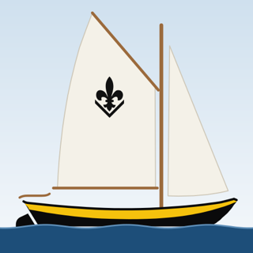
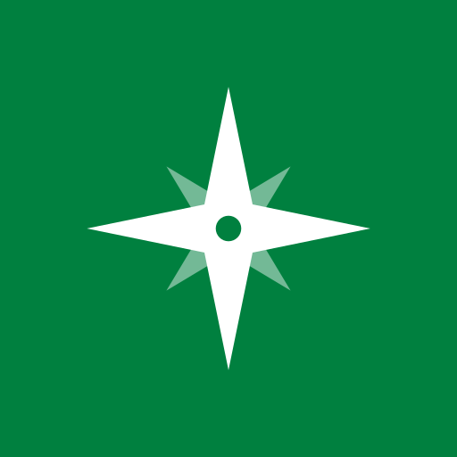

Lelievlet 3D
De lelievlet in 3D. Leer de onderdelen, bekijk hoe de manoeuvres gaan en oefen ze stap voor stap.
Open Lelievlet 3D
Scoutingtechnieken
Knopen, sjorren, kaart en kompas, tochttechnieken, seinen, vuur en kamperen: opzoeken, leren en oefenen.
Binnenkort